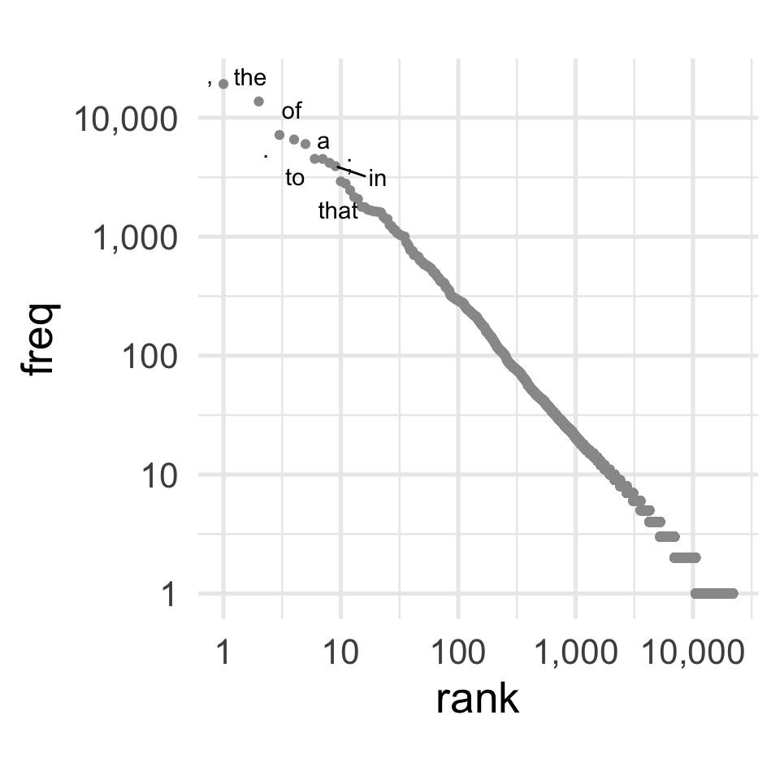

ngrams
-or- What if we could parse natural language with a finite state automaton?
So, in our notes on finite state automata and push-down automata we concluded that since natural language has bracket matching patterns, and maybe even crossing dependencies, that it’s more complex than a “regular” language, and can’t really be parsed with a finite state automaton.
ngram language modelling asks the question: But what if we tried really hard?
True
[nltk_data] Downloading package punkt to /Users/runner/nltk_data...
[nltk_data] Unzipping tokenizers/punkt.zip.States and Words
The first sentence of Moby Dick is, famously,
Call me Ishmael.
We could try representing this as a finite state automaton like so:
stateDiagram
direction LR
[*] --> call: call
call --> me: me
me --> ishmael: ishmael
ishmael --> [*]
But, this is far from a complete model of the whole book Moby Dick. It would only work if the entire book was just “Call me Ishmael” over and over again.
To enrich the FSA, we could add all of the other words that could follow “call”.
stateDiagram
direction LR
[*] --> call: call
call --> call: call
call --> it: it
call --> a: a
call --> me: me
call --> him: him
call --> ...
call --> [*]
me --> ishmael: ishmael
me --> call: call
ishmael --> [*]
But, lots of other words could also follow “me”. And more words could also follow “Ishmael”
stateDiagram
direction LR
[*] --> call: call
call --> call: call
call --> it: it
call --> a: a
call --> me: me
call --> him: him
call --> ...
call --> [*]
me --> me: me
me --> call: call
me --> that: that
me --> and: and
me --> ishmael: ishmael
me --> to: to
me --> ...
me --> [*]
ishmael --> ishmael: ishmael
ishmael --> me: me
ishmael --> can: can
ishmael --> said: said
ishmael --> ...
ishmael --> [*]
If we fully fleshed out this diagram with all1 of words in Moby Dick, it would look like this
*grams
The “model” of word sequences is called an “ngram” model or more specifically a “bigram” model.
| Words in the current state | Words in input | Total Words | Name |
|---|---|---|---|
| 1 | 1 | 2 | bigram |
| 2 | 1 | 3 | trigram |
| 3 | 1 | 4 | 4-gram |
| 4 | 1 | 5 | 5-gram |
| etc |
We can expand the context of the bigram model to a trigram model, which would look something like this
stateDiagram direction LR state "_ call" as _c state "call me" as cm state "me Ishmael" as mi [*] --> _ _ --> _c: call _c --> cm: me cm --> mi: Ishmael mi --> [*]
But, again, even for this small vocabulary, this total number of states is incomplete. If we wired up all of the logical transitions they’d look like this ilithid monstrosity.
stateDiagram
direction LR
state "_ call" as _c
state "_ me" as _m
state "_ Ishmael" as _i
state "call me" as cm
state "call call" as cc
state "call Ishmael" as ci
state "me Ishmael" as mi
state "me call" as mc
state "me me" as mm
state "Ishmael call" as ic
state "Ishmael Ishmael" as ii
state "Ishmael me" as im
[*] --> _: _
_ --> _m: me
_ --> _c: call
_ --> _i: Ishmael
_c --> cm: me
_c --> cc: call
_c --> ci: Ishmael
cc --> cc: call
cc --> ci: Ishmael
cc --> cm: me
ci --> ii: Ishmael
ci --> im: me
ci --> ic: call
cm --> mi: Ishmael
cm --> mm: me
cm --> mc: call
_m --> mc: call
_m --> mm: me
_m --> mi: Ishmael
mm --> mm: me
mm --> mc: call
mm --> mi: Ishmael
mi --> ii: Ishmael
mi --> ic: call
mi --> im: me
mc --> cm: me
mc --> ci: Ishmael
mc --> cc: call
_i --> ic: call
_i --> im: me
_i --> ii: Ishmael
ic --> cc: call
ic --> cm: me
ic --> ci: Ishmael
im --> mi: Ishmael
im --> mc: call
im --> mm: me
ii --> im: me
ii --> ic: call
ii --> ii: Ishmael
Probabilistic ngrams
But, if we look at the actual entire book Moby Dick, not all of these connections are equally likely.
| next word | word | ||
|---|---|---|---|
| call | me | ishmael | |
| call | 0 | 1 | 0 |
| ishmael | 0 | 1 | 0 |
| me | 3 | 0 | 0 |
%% fig-align: center
flowchart LR
c["call"] ==> m["me"]
m --> c
m --> i["Ishmael"]
Terminology and Notation Moment
Types vs Tokens
A function to get all of the words in Moby Dick
python
import re
import gutenbergpy.textget
from nltk.tokenize import word_tokenize
def get_moby_dick_words():
raw_book = gutenbergpy.textget.get_text_by_id(2701) # with headers
moby_dick_byte = gutenbergpy.textget.strip_headers(raw_book) # without headers
moby_dick = moby_dick_byte.decode("utf-8")
moby_dick_tokens = word_tokenize(moby_dick)
moby_dick_words = [tok for tok in moby_dick_tokens]
return moby_dick_wordspython
moby_dick_words = get_moby_dick_words()
for idx, word in enumerate(moby_dick_words[0:20]):
print(word, end = ", ")
if (idx+1) % 5 == 0:
print("")MOBY-DICK, ;, or, ,, THE,
WHALE, ., By, Herman, Melville,
CONTENTS, ETYMOLOGY, ., EXTRACTS, (,
Supplied, by, a, Sub-Sub-Librarian, ), We can get counts of how often each word appeared in the book with collections.Counter() .
python
from collections import Counter
word_count = Counter(moby_dick_words)Let’s compare the length of the full list of words to the length of the word count dictionary.
python
print(f"There are {len(moby_dick_words):,} total words.")There are 255,958 total words.python
print(f"There are {len(word_count):,} unique words.")There are 21,897 unique words.In more common corpus/compling terminology, we would say
There are 215,300 tokens in Moby Dick.
There are 19,989 types in Moby Dick.
We can get the frequency of the words “whale” and “ogre” in Moby Dick like so:
We can index word_count with the string "whale" because it is a “dictionary” We could create our own dictionary like this:
python
food_type = {
"banana": "fruit",
"strawberry": "fruit",
"carrot": "vegetable",
"onion": "vegetable"
}
food_type["banana"]'fruit'python
print(f"The word 'whale' appeared {word_count['whale']:,} times.")The word 'whale' appeared 771 times.python
print(f"The word 'ogre' appeared {word_count['ogre']} times.")The word 'ogre' appeared 0 times.The way we’d describe this in a more corpus/comp-ling way is
The word type “whale” appears in Moby Dick. There are 1,070 tokens of “whale” in the book.
The word type “ogre” does not appear in Moby Dick.
Notation
Words and variables
| text | Call | me | Ishmael | . | Some | years | … | |
| math standin | \(w_1\) | \(w_2\) | \(w_3\) | \(w_4\) | \(w_5\) | \(w_6\) | \(w_i\) |
- \(w_2\)
-
Literally the second word in a sequence.
- \(w_i\)
-
The \(i\)th word in the sequence (that is, any arbitrary word).
Counting Words
| token | n | math |
|---|---|---|
| Call | 3 | \(C(w_1) = 3\) |
| me | 607 | \(C(w_2) = 607\) |
| Ishmael | 18 | \(C(w_3) = 18\) |
| . | 7164 | \(C(w_4) = 7164\) |
| Some | 38 | \(C(w_5) = 38\) |
| years | 91 | \(C(w_6) = 91\) |
- \(C()\)
-
A function for the “C”ount of a value.
- \(C(w_1)\)
-
The frequency of the type of the first token
- \(C(w_i)\)
-
The frequency of an arbitrary type.
| token | next token | n | math |
|---|---|---|---|
| Call | me | 1 | \(C(w_1w_2) = 1\) |
| me | Ishmael | 1 | \(C(w_2w_3) = 1\) |
| Ishmael | . | 3 | \(C(w_3w_4) = 3\) |
| . | Some | 27 | \(C(w_4w_5) = 27\) |
| Some | years | 1 | \(C(w_5w_6) = 1\) |
- \(C(w_1w_2)\)
-
The count of times the sequence \(w_1w_2\) occured.
- \(C(w_iw_{i+1})\)
-
The count of times an arbitrary 2 word sequence appeared
- \(C(w_{i-1}w_i)\)
-
Same as before, but with emphasis on the second word.
Probabilities
- \(P(w_1)\)
-
The probability of the first word
- \(P(w_i)\)
-
The probability of an arbitrary word
- \(P(w_2|w_1)\)
-
The probability that we’ll get word 2 coming after word 1
- \(P(w_i|w_{i-1})\)
-
The probability we’ll get any arbitrary word coming after the word before.
Language Prediction
When we are perceiving language, we are constantly and in real-time making predictions about what we are about to hear next. While we’re going to be talking about this in terms of predicting the next word, It’s been shown that we do this even partway through a word (Allopenna, Magnuson, and Tanenhaus 1998).
So, let’s say I spoke this much of a sentence to you:
I could tell he was angry from the tone of his___
And then a sudden noise obscured the final word, and you only caught part of it. Which of the following three words was I probably trying to say?
- boys
- choice
- voice
Your ability to guess which word it was is based on your i) experience with English turns of phrase and ii) the information in the context.
One goal of Language Models is to assign probabilities across the vocabulary for what the next word will be, and hopefully assign higher probabilities to the “correct” answer than the “incorrect” answer. Applications for this kind of prediction range from speech-to-text (which could suffer from a very similar circumstance as the fictional one above) to autocomplete or spellcheck.
Using context (ngrams)
In the example sentence above, one way we could go about trying to predict which word is most likely is to count up how many times the phrase “I could tell he was angry from the tone of his___” is finished by the candidate words. Here’s a table of google hits for the three possible phrases, as well as all hits for just the context phrase.
| “I could tell he was angry from the tone of his” | count |
|---|---|
| boys | 0 |
| choice | 0 |
| voice | 3 |
| “I could tell he was angry from the tone of his” | 3 |
We’re going to start diving into mathematical formulas now (fortunately the numbers are easy right now).
To represent the count of a word or string of words in a corpus. We’ll use \(C(\text{word})\). So given the table above we have
| \(C(\text{I could tell he was angry from the tone of his})\) | = | 3 |
| \(C(\text{I could tell he was angry from the tone of his boys})\) | = | 0 |
| \(C(\text{I could tell he was angry from the tone of his choice})\) | = | 0 |
| \(C(\text{I could tell he was angry from the tone of his voice})\) | = | 3 |
To describe the probability that the next word is “choice” given that we’ve already heard “I could tell he was angry from the tone of his”, we’ll use the notation \(P(\text{choice} | \text{I could tell he was angry from the tone of his})\). To calculate that probability, we’ll divide the total count of the whole phrase by the count of the preceding context.
\[ P(\text{choice} | \text{I could tell he was angry from the tone of his}) = \frac{C(\text{I could tell he was angry by the tone of his choice})}{C(\text{I could tell he was angry by the tone of his})} = \frac{0}{3} = 0 \]
Or, more generally:
\[ P(w_i|w_{i-n}\dots w_{i-1}) = \frac{w_{i-n}\dots w_i}{w_{i-n}\dots w_{i-1}} \]
In fact, we can estimate the probability of an entire sentence with the Probability Chain Rule. The probability of a sequence of events like \(P(X_1X_2X_3)\) can be estimated by multiplying out their conditional probabilities like so:
\[ P(X_1X_2X_3) = P(X_1)P(X_2|X_1)P(X_3|X_1X_2) \]
Or, to use a phrase as an example:2
\[ P(\text{du hast mich gefragt})=P(\text{du})P(\text{hast}|\text{du})P(\text{mich}|\text{du hast})P(\text{gefragt}|\text{du hast mich}) \]
Data Sparsity
The problem we face is that, even with the whole internet to search, very long phrases like “I could tell he was angry by the tone of his” are relatively rare!
If we look at Moby Dick, using a standard tokenizer (more on that later) we wind up with 255,958 words in total. But not every word is equally likely.

And as the size of the ngrams increases, the sparsity gets worse.
A “Hapax Legomenon” is a word or phrase that occurs just once in a corpus. If we look at the 2-grams through 5-grams in Moby Dick and make a plot of what proportion of tokens are hapax legomena, we can see that almost all 5grams appear just once.
The problem with data sparsity
Let’s say we got the following sequence of 4 words, and I wanted to predict the 5th
| a | man | is | elevated | ? |
| \(w_1\) | \(w_2\) | \(w_3\) | \(w_4\) | \(w_5\) |
So, for each word type, I want to know
\[ P(w_i | \text{a man is elevated}) \]
We know this is going to be calculated with this formula:
\[ \frac{C(\text{a man is elevated }w_i)}{C(\text{a man is elevated)}} \]
From the 4gram counts, I’ll grab a table of the frequency of “a man is elevated”.
| 4gram | freq |
|---|---|
| a man is elevated | 1 |
It looks like “a man is elevated” appeared just once, so it follows that the 5gram that starts with “a man is elevated” also appears just once.
| 5gram | freq |
|---|---|
| a man is elevated in | 1 |
If we wanted to compare the probabilities of the words in and to in this context. we’d wind up with the following results.
\[ P(\text{in} | \text{a man is elevated}) = \frac{C(\text{a man is elevated in})}{C(\text{a man is elevated)}} = \frac{1}{1} = 1 \]
\[ P(\text{to} | \text{a man is elevated}) = \frac{C(\text{a man is elevated to})}{C(\text{a man is elevated)}} = \frac{0}{1} = 0 \]
According to this 5gram model trained on Moby Dick, there’s a 0% chance that the next word could be “to”.
Is that really reasonable?
Approximating with ngrams
Instead of using long ngrams, we can try approximating with shorter ngrams (known as the Markov Assumption).
\[ P(\text{in} | \text{a man is elevated}) \approx P(\text{in} | \text{elevated}) \]
| bigrams | freq | \(P(w_i)\) |
|---|---|---|
| elevated above | 2 | 0.18 |
| elevated , | 2 | 0.18 |
| elevated out | 2 | 0.18 |
| elevated in | 1 | 0.09 |
| elevated quarter-deck | 1 | 0.09 |
| elevated hump | 1 | 0.09 |
| elevated part | 1 | 0.09 |
| elevated open-work | 1 | 0.09 |
Calculating probabilities
Remember this chain rule?
\[ P(\text{du hast mich gefragt})=P(\text{du})P(\text{hast}|\text{du})P(\text{mich}|\text{du hast})P(\text{gefragt}|\text{du hast mich}) \]
We’d simplify this, like so:
\[ P(\text{du hast mich gefragt}) = P({\text{du} | \text{\#}})P(\text{hast} | \text{du})P(\text{mich} | \text{hast})P(\text{gefragt}|\text{mich}) \]
Log Probabilities
There’s an additional complication about how we represent probabilities. Let’s build a very probable 10 word string starting with “The”. I’ll just grab the most frequent \(w_i\) that comes after \(w_{i-1}\).3
| bigram | freq | \(P(w_i | w_{i-1})\) |
|---|---|---|
| The Pequod | 15 | 0.02 |
| Pequod ’ | 49 | 0.28 |
| ’ s | 1,784 | 0.64 |
| s a | 73 | 0.04 |
| a little | 105 | 0.02 |
| little , | 11 | 0.04 |
| , and | 2,630 | 0.14 |
| and the | 361 | 0.06 |
| the whale | 325 | 0.02 |
| whale , | 173 | 0.22 |
[1] "> The Pequod’s a little, and the whale,"We can calculate the cumulative probability of each next substring of the sentence.
| bigram | freq | \(P(w_i | w_{i-1})\) | \(P(w_{i-n}\dots w_i)\) |
|---|---|---|---|
| The Pequod | 15 | 0.02 | 0.0216763006 |
| Pequod ’ | 49 | 0.28 | 0.0060693642 |
| ’ s | 1,784 | 0.64 | 0.0038809124 |
| s a | 73 | 0.04 | 0.0001588042 |
| a little | 105 | 0.02 | 0.0000036997 |
| little , | 11 | 0.04 | 0.0000001648 |
| , and | 2,630 | 0.14 | 0.0000000226 |
| and the | 361 | 0.06 | 0.0000000014 |
| the whale | 325 | 0.02 | 0.0000000000 |
| whale , | 173 | 0.22 | 0.0000000000 |
I artificially clamped the number of decimal points that would show in the final column to 10, but because of the way computers represent decimal points, they also have a lower limit they can get to.
To avoid things getting weird with decimals that are too small, these probabilities will often be represented as log probabilities.
If you don’t remember how logarithms work, that’s ok. There’s just a few useful properties to remember.
\[ \log(x) \left\{ \begin{array}{c} > 0; x>1\\=0; x =1\\<0; x<1 \end{array} \right\} \]
\[ \log(0) = -\infty \]
\[ \log(x y) = \log(x) + \log(y) \]
\[ \log(\frac{x}{y}) = \log(x) - \log(y) \]
| bigram | probability | log(prob) | total log(prob) |
|---|---|---|---|
| The Pequod | 0.02 | −3.83 | −3.83 |
| Pequod ’ | 0.28 | −1.27 | −5.10 |
| ’ s | 0.64 | −0.45 | −5.55 |
| s a | 0.04 | −3.20 | −8.75 |
| a little | 0.02 | −3.76 | −12.51 |
| little , | 0.04 | −3.11 | −15.62 |
| , and | 0.14 | −1.99 | −17.61 |
| and the | 0.06 | −2.81 | −20.42 |
| the whale | 0.02 | −3.74 | −24.16 |
| whale , | 0.22 | −1.49 | −25.66 |
References
Footnotes
Reuse
Citation
@online{fruehwald2024,
author = {Fruehwald, Josef},
title = {Ngrams},
date = {2024-02-13},
url = {https://lin511-2024.github.io/notes/meetings/04_ngrams.html},
langid = {en}
}